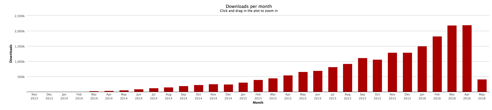

postCSS REVOLUTION
¡Buenas tardes!
Me llamo Jorge Aznar y trabajo como front en Hiberus Internet.
¿postCSS?
“PostCSS is a tool for transforming CSS with JS plugins. These plugins can support variables and mixins, transpile future CSS syntax, inline images, and more.”
postCSS vs SASS
NOOOOOOO!!!
postcss
love
SASS - LESS - STYLUS
postCSS NO es un preprocesador
puede convivir con tu preprocesador favorito como SASS & LESS
postCSS NO es un postprocesador
It is time admit my mistakes. “Postprocessor” term was bad. PostCSS team stoped to use it.COMO TRABAJA POSTCSS


LANZANDO POSTCSS


VENTAJAS
Modular y flexible
Tenemos la oportunidad de crear nuestra propia herramienta de trabajo y adaptarla a cada proyecto.
“Someone asked @andreysitnik why you make @PostCSS He answered becouse I pull request to compass CSS and they didn't ansewred me.”
“@andreysitnik @PostCSS so I decided to destroy them.”
Rápidez
| Procesadores CSS | Velocidad |
|---|---|
| postCSS | 39ms |
| Rework | 79ms |
| libsass | 179ms |
| LESS | 179ms |
| STYLUS | 269ms |
| Ruby SASS | 1101ms |
Comunidad
Más de 200 plugins
Utilizado por Google, Twitter, Alibaba y Shopify
Popularidad
18.347.510 de descargas totales
Más de 2.000.000 de descargas mensuales
Plugins
“However, developers are generally no interest in trying out things they can't use in production.”
Lea Verou in CSS Secrets
“La vida es eso que pasa mientras los navegadores deciden dar soporte a las nuevas funcionalidades de CSS. ”
Jorge Aznar antes de conocer CSSNEXT

Use tomorrow’s CSS syntax,
TODAY.
CSSNEXT
custom properties
:root {
--colorico: navajowhite;
}
h2 {
color: var(--colorico);
}
CSSNEXT
custom media queries
//Definimos el custom media querie
@custom-media --ipad (width => 48rem);
//Declaramos el custom media querie
@media (--ipad) {
body {
display: none;
}
}
CSSNEXT
custom selectors
//Definimos el selector
@custom-selector :--encabezados h1, h2, h3, h4, h5, h6;
:--encabezados { font-family: -apple-system,BlinkMacSystemFont,sans-serif; }
preCSS
Utilizando SASS con postCSS
- Variables
- Mixins
- Loops
- Extends
postCSS-sorting
“Friendly reminder that CSS declaration sorting (no matter how) helps gzip perform better.”Hugo Giraudel
 Reduce file size css sorting
Reduce file size css sorting
Plugis que utilizo
MUCHOS PLUGINS MÁS EN: postcss.parts

¡A PRACTICAR!
Configurando Gulp
var gulp = require('gulp');
postcss = require('gulp-postcss');
autoprefixer = require('gulp-autoprefixer');
sourcemaps = require('gulp-sourcemaps');
atImport = require('postcss-import');
cssnext = require('postcss-cssnext');
sorting = require('postcss-sorting');
nested = require('postcss-nested');
gulp.task('css', function() {
var processors = [
atImport,
nested,
cssnext,
sorting({
"sort-order": "csscomb"
}),
autoprefixer
];
});
Configurando Gulp
gulp.task('css', function() {
var processors = [
atImport,
nested,
cssnext,
sorting({
"sort-order": "csscomb"
}),
autoprefixer
];
});
OJO CUIDAO!
El orden de los plugins IMPORTA
PostCSS the bad parts: plugins order.
— Maxime Thirouin (@MoOx) 16 de marzo de 2016
ISSUE - Event based APIPostCSS Reminder: 99% of issues are: autoprefixer is on top (should be last), postcss-import is not on top (should be first).
— Maxime Thirouin (@MoOx) 16 de marzo de 2016